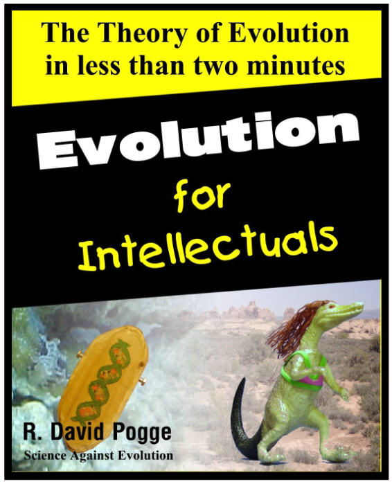

)
)| Feature Article - June 2009 |
| by Do-While Jones |
We entered Discover magazine's evolution contest, expecting to lose.
|
 |
We could not resist the temptation to enter Discover magazine's evolution contest. Here's the mean-spirited ad that attracted our attention.
|
The Challenge Can you communicate the most important idea in biology, and one of the most controversial ideas in our society, in a mere 120 seconds? Think you can convince even the most hard-headed creationist that Darwin was right? If so, show us--and that creationist--how it's done. Your task is to create a video of no more than two minutes that will get the idea and significance of evolution across to an educated lay audience. Along the way, you can touch on points like how evolution works, how we know it to be true, the evolution of humanity, and the future of evolution. The Opportunity As you probably know, evolution is under attack in America, from local school boards all the way to Congress. Can a short, inspired video help to spread the truth about this absolutely essential idea? We sure hope so. 1 |
We knew our entry would not win. In fact, we knew we would not be one of the top five finalists unless there were only four other entries. (Is that why they extended the deadline past June 1?) We expected them to announce the finalists by now, but they haven't. Since we don't want to slip our deadline just because of them, we can't write about the five finalists this month.
If you are familiar with our web site, you know that we enjoy humor with a serious purpose. Humor is funny only if it is based on truth. For example, in recent years, professional comedians made lots of jokes about President Clinton chasing girls and President Bush mispronouncing words. Not one made a joke about Clinton mispronouncing words. A joke about Clinton mispronouncing words would have fallen flat because it has no basis in truth.
Although humor is based on truth, it isn't strictly true. It exaggerates the truth to absurdity. Such was the case when a comedian recently said President Obama took so long to get a dog for his girls because he had trouble finding a puppy that owed back taxes.
This brings us to an important point: People won't get the joke if they don't know the truth. Someone who doesn't follow American politics would not know that Obama promised to buy his girls a dog as soon as he moved into the White House, but didn't actually get them a dog for several months. Meanwhile, he was filling his administration with people who "forgot" to pay their taxes. The joke isn't funny if you don't know this.
People who don't know much about evolution won't get the jokes in our video. So, we will explain them to you in this essay. Since explaining a joke sucks the humor out of it, we really hope you watch our video in mp4 or wmv format before reading the following paragraphs.
The title slide shows a book cover that looks remarkably like Evolution for Dummies. It uses a similar color scheme, layout, and fonts. The irony is that this book is for intellectuals rather than dummies.
There are two kinds of evolutionists: innocently ignorant evolutionists and intimidated intellectual evolutionists.
Innocently ignorant evolutionists aren't dummies--they have just fallen victim to the one-sided propaganda preached in public schools. They aren't stupid--they just don't know the truth because it has been censored. They accept, without question, "evolution is a fact," just because someone told them so. Most of them don't know anything about evolution. Therefore, most of them will be confused by our video. Hopefully, it will get them to ponder things they have been told, and realize how utterly unscientific the theory of evolution really is.
There are only a few intimidated intellectual evolutionists. There are so few of them that you know who they are. We are talking about people like Eugenie C. Scott, Jerry Coyne, Richard Dawkins, and the editors of Discover Magazine. If you read their work, it becomes immediately apparent that they believe in evolution because they don't believe what Dawkins calls, "the God delusion."
They reason that evolution must be true because there isn't any supernatural creator. They are intimidated because they fear that if evolution isn't true, a mean, vengeful God will torture them eternally for their unbelief and disobedience. Because of their distorted view of religion, they steadfastly refuse to acknowledge the truth that is staring them right in the face. They call upon all of their intellectual powers to deny the obvious flaws and inconsistencies in the theory of evolution. Witness all the excuses we pointed out last month in Jerry Coyne's book.
We titled our video Evolution for Intellectuals because it presents the theory of evolution from the intimidated intellectual point of view. It makes scientifically absurd statements as if they were undeniable facts.
Reactions to our video will vary. Innocently ignorant evolutionists will be confused because they won't get too many of the jokes. Hopefully, it will get them to thinking. Intimidated intellectual evolutionists will be greatly angered by our video because they will get the jokes, and will realize that they expose the absurdity of their claims. But since their belief in evolution is based on fear rather than reason, our video won't have much affect on them. Creationists will get all the jokes, will laugh, and love the video.
One of the stars of our video is Frankencell, the first living thing which came to life through an unguided, natural process which has not yet been discovered. In our video, Frankencell comes to life in the methane and ammonia atmosphere of a dirty diaper. Science is based on observation, but new life forms have never been observed to arise spontaneously in dirty diapers. (Doubtless, Coyne's excuse is that people try to avoid examining dirty diapers as much as possible. )
Let's separate the truth from the exaggerated humor. Fifty years ago, when Stanley Miller produced a few organic molecules in a methane and ammonia atmosphere, evolutionists were really convinced that's how life began. Today, that theory is largely rejected. They know it didn't happen that way, but since they have no alternative, Miller's experiment is still in the biology textbooks.
Since evolutionists don't even have a remotely plausible explanation for the origin of life, they try to exclude the origin of life from the theory of evolution. They say that abiogenesis is not part of evolution when, it fact, it is the very foundation of evolution.
Whether they like to admit it or not, intimidated, intellectual evolutionists believe that some natural process caused lots of different organic compounds to arise from simple molecules. Those organic compounds assembled themselves into a cell with a membrane that allows nutrients in and waste products out. Then, somehow, that cell made the transition from inanimate to animate. That is, just like Frankenstein's monster, it came to life.
But let's not stop there. Once it came to life, it had to start acquiring and using energy to grow, and eventually reproduce. If not, it would have died shortly after coming to life, and there would be nothing to evolve.
Reproduction is a real problem for evolutionists, on several levels. The first living thing had to reproduce before it died. What compels a single cell to divide itself in two?
The reproduction process had to be perfect enough to create more identical offspring, but it had to be imperfect enough to create different offspring. When an imperfect (perhaps incomplete) reproduction produced the first multi-cellular organism, it not only had to be viable, but the different cells had to perform different functions in harmony with each other. How and why did that happen? Evolutionists don't know, but they believe it must have happened because there are so many different kinds of multi-cellular organisms.
Multi-cellular animals fall into two categories: vertebrates and invertebrates. That is, animals either have a backbone or they don't. Evolutionists believe that all vertebrates have a common ancestor, which must have been some kind of fish.
Evolving a backbone isn't just a matter of evolving a bone down the back. The backbone is what protects the spinal cord, which is an integral part of the central nervous system. So, when evolutionists say that something evolved a backbone, they are really saying that something evolved a functioning central nervous system with a brain connected to at least one kind of sensor (sight, hearing, taste, touch, or smell). That's one small step for an evolutionist, but one giant leap for a fish.
Fish are sexual creatures, which is another reproduction issue that confounds evolutionists. Sexual reproduction is certainly good. It provides a method of eliminating genetic errors from the population. It also allows for variation. There's no argument about that. The tough question is, "How did sexual reproduction originate?" The evolutionists' naïve answer is that, since it is good, it must have evolved. They would like you to accept that without thinking further about it. Let's think further.
Suppose the first male creature evolved by chance, but there were no female creatures. That male creature could not produce any offspring, and so the male mutation would die out in the first generation. The same thing is true if a female evolved alone. Therefore, male and female forms had to evolve simultaneously for the sexual mutations to establish a population. That's highly unlikely.
But there's more. Suppose that male and female variants did arise simultaneously (in the same geographic area, no less). How would they know what to do with each other? Why would they want to do it? A female fish finds a secluded place to lay her eggs. What motivates a male fish to find those eggs and fertilize them? It's almost as if fish were programmed to lay eggs and fertilize them. If they were programmed to do this, it implies a programmer, which is unacceptable to evolutionists. So, evolutionists need an explanation for how programmed responses can evolve without a programmer. They haven't got one.
As the story goes, fish evolved into amphibians, which evolved into reptiles, which evolved into mammals. The textbooks make this sound as simple as scales turning into hair. Yes, reptiles have scales and mammals have hair, but there is more to it than that.
Reptiles, like fish and amphibians, are cold-blooded. Their bodies are the same temperature as their surroundings.
Mammals are warm-blooded. They regulate their body temperatures within a certain range regardless of the outside temperature. When they get too cold, they shiver (or perform other physical activity such as rubbing their hands) to create heat. When they get too hot, they sweat so that evaporation will cool them down. This means that mammals need a closed-loop control system that includes temperature sensors connected to heating and cooling mechanisms. Any engineer who has designed a closed-loop control system knows that one isn't likely to put together a properly functioning system by chance.
The defining characteristic of a mammal is, of course, its mammary glands. Mammals bear live young which are incapable of digesting meat, fruits and vegetables. Therefore, mother needs to produce milk for the infant to drink. The mammary glands only secrete milk after a baby is born. That requires some sort of chemical information transfer between the womb and the breasts, which is unlikely to have arisen by chance. Also, there is the apparently pre-programmed instinct for the mother to bring the infant to the breast, and the infant to suck it. It is hard to describe the entire nursing procedure without using the word, "miraculous."
A lot of our evolutionary attention centers on animals, but plants are supposed to have evolved, too. The plant evolution myth is even more amazing than the animal myth.
The defining difference between plants and animals is that plants can manufacture their own food but animals can't. Animals have to eat other animals or plants. The first living thing had to be a plant because the first animal would not have had any pre-existing plants or animals to eat.
Green plants produce their own food using a process called photosynthesis, which involves chlorophyll. Plants take carbon dioxide and water and assemble them into fats and sugars using the power of the sun. It is a very complicated process.
Engineers could solve the world hunger problem if they could just invent an artificial leaf. Imagine a concrete slab about the size of a football field. Make it slope gradually so that the north end is about 2 inches higher than the south end. Cover it with some sort of material impregnated with chlorophyll and other necessary chemicals. Spray a mist of water on the north end, and let the water flow slowly across the artificial leaf until it collects in a gutter at the south end. Pump this water, which contains sugars and fats, into a processing plant that packages the sugars and fats somehow as food. Why haven't engineers done that yet?
The reason, of course, is that photosynthesis is such a complicated process that we can't duplicate it. If photosynthesis arose by accident, one would think that it would be imperfect and inefficient, so humans could design a similar, but more efficient, way to do it. But the fact remains that if you want an area the size of a football field to turn sunlight into food, the best way to do it is to plant soy beans on it.
Sex is the root of many problems, so it is no surprise that plant sex causes problems for evolutionists. Plants are in an entirely different biological kingdom than animals. Sex would have had to have evolved separately in each kingdom. Everything we said about the problem of the origin of sex in animals applies to plants, too. But, additionally, there is the problem of sexual urges in plants (which have no consciousness). It is hard enough to explain why animals instinctively mate, but the notion of plants wanting to mate is absolutely absurd.
Evolutionists claim that bees and flowers "coevolved" because bees need flowers and flowers need bees. That's wishful thinking, not science. Furthermore, there is the problem of the origin of plant fertilization before bees evolved. Supposedly, before bees evolved, pollen was spread by the wind. That's pretty inefficient. But, it must have been good enough, or else the first sexual plant would not have been able to reproduce using the wind for pollination. If wind pollination was good enough, then there wouldn't be any need to evolve pretty flowers that attract bees.
In our video, we make the same kind of silly, groundless assertions that intimidated intellectual evolutionists make all the time. The only difference was that we make them with funny pictures in the background. Furthermore, when we threaten to expel you if you didn't believe it, we are clearly joking. But evolutionists aren't joking. You can fail a course or lose your job if you don't promise to believe the unbelievable.
After a long delay, Discover announced the winners.
| Quick links to | |
|---|---|
| Science Against Evolution Home Page |
Back issues of Disclosure (our newsletter) |
| Web Site of the Month |
Topical Index |
Footnotes:
1
http://discovermagazine.com/contests/evolution-in-two-minutes-or-less/ no longer works. (No surprise.)